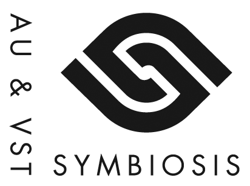

Symbiosis is a developer tool for adapting Mac OS X VST plug-ins to the Audio Unit (AU) standard. It essentially consists of a single C++ file that you can compile into your VST project to make the plug-in compatible with the Audio Unit protocol. Optionally, you may choose to use a pre-built "wrapper plug-in" for adapting your existing VST plug-in to the AU standard without even having to recompile any source code.
Although the VST and Audio Unit SDKs differ greatly in implementation, the purpose and functions of the two standards are virtually identical. Both protocols provide means for querying plug-in info and capabilities, processing floating- point audio, reading and writing automation parameters, serializing the plug-in state for total recall and managing GUI interaction.
The close affinity of the two standards makes it possible to create a "wrapper" that works on "binary level", meaning that it translates messages to and from the AU host and VST plug-in in real-time.
The translation works transparently for perhaps 90% of the Audio Unit functionality. Where the AU and VST standards differ greatly or where the former offers valuable features not found in the latter, Symbiosis offer configuration files and optional code extensions that allow you to create feature-complete Audio Units, true to the philosophies and principles of the architecture.
You can also configure Symbiosis to automatically convert preset files it discovers from the VST format (".fxb" and ".fxp" files) to the AU format (".aupreset" files).
This is a tool for developers. It was not designed to be used by end-users. The idea is that Symbiosis is packaged into the final product, either compiled into the product on source-code level or as a "wrapper" that bridges to your VST.
Symbiosis will be of great interest to you if you already have a VST plug-in running under Mac OS X and you now wish to support the Audio Unit format. With Symbiosis, there is no need to master and implement the Audio Unit interface yourself. Although plenty of documentation and examples are available for learning the art of Audio Unit coding, it is far from trivial to understand all aspects and details of this fairly complex API. Add to this the continuous work of supporting and maintaining the source code for two different plug-in interfaces and the advantage of using Symbiosis should be obvious.
The availability of Symbiosis may also makes VST a good choice as a first plug-in format for the beginner Mac developer who one day plan to port his / her plug-in to the VST-dominant environment of Windows.
Nothing. Symbiosis is released as open source under the BSD license form (see Copyrights and Trademarks).
I (Magnus Lidström) developed Symbiosis partly because I needed such a tool for my own use, but also because I felt that all developers would benefit from a unified plug-in world with a single standard API. We will probably never be able to change the fact that certain hosts only work with certain plug-in formats, but at least, Symbiosis will make it feasible to support two of these formats with a minimal amount of overhead in code, work and continuous maintenance.
My only request if you find this tool useful is that you spread the word, preferably by adding an acknowledgment in your product documentation, "about box" or any other promotional material. For example, "Audio Unit version implemented using Symbiosis from NuEdge Development."
My dear friends over at Bitplant (http://www.bitplant.com/) have also designed a very stylish logo that I would be thrilled if you used. You can find it (and other related logotypes) at http://fogbugz.nuedge.net/default.asp?W101.
The minimum requirement is that you have the Apple OS X development tools and the CoreAudio SDK installed. (Configuring Symbiosis for your product requires at least using the "Rez" tool in order to compile the required AU "component resources".)
If you wish to compile the Symbiosis "wrapper plug-in" project, you will need XCode 2.5 or later. The VST SDK from Steinberg is required to compile Symbiosis as well, but due to licensing restrictions, the source files from this SDK are not included in this distribution but must be obtained separately from Steinberg and added to the project manually.
In case you are new to Audio Units but familiar with VST, the following list is provided as a crash course on the differences between the two formats.
- AUs are component resources, scanned and indexed by OS X unlike VSTs which are scanned by each VST host individually.
- AU parameters are identified with arbitrary 32-bit IDs (instead of incrementally indexed from 0 and up).
- AU parameters have more meta info (ranges, types and even string arrays for discrete parameter choices).
- There is no concept like the VST "program slots" in AU, but AUs may provide a list of read-only factory presets.
- AUs can convert arbitrary parameter values to and from strings at any given time. (VSTs can only convert the currently assigned parameter values.)
- AUs have silent buffer optimizations.
- AU inputs and outputs are grouped into buses and the same AU plug-in can provide a number of input and output configurations.
- AU GUIs must be implemented with HIViews. (This has become the standard for VSTs too, but previously VSTs had a different user input / window drawing mechanism.)
Symbiosis supports all unique AU features mentioned above.
So, you have a VST plug-in that you want to metamorphose into an Audio Unit? How do you begin? First, you need to decide how you wish to wrap your VST.
- Using the pre-built wrapper AU component and placing an alias to your VST inside the wrapper bundle
The advantage of this solution is that the same physical binary is used for both the VST and AU version. This means
that your plug-in will be smaller to download and will take up less space on the user's disk once it has been
installed. It also simplifies version handling as you will only need to build and update one single binary for both
formats.
The disadvantage is that the AU-version is not 100% self-contained and the end-user can break it if he / she
uninstalls or throws away the VST. (Nevertheless, this approach may be the best choice during development even if you
choose to wrap the final product using one of the other solutions.)

- Using the pre-built wrapper AU component and placing a copy of your VST inside the wrapper bundle
This approach is almost identical to alternative number 1 except that the VST bundle is "physically" duplicated
inside the AU bundle. The advantage of choosing this solution is that the AU-version becomes self-contained. If your
plug-in is small, this alternative should be preferred to alternative number 1, at least when you are packaging the
final product.

- Adding the Symbiosis sources to your VST project and copy + change extension
By simply adding the Symbiosis source code and a few libraries and resource files to your VST project, the compiled
VST binary becomes compatible with both the VST and the AU standards simultaneously. How cool is that? All you need
to do is copy the final .vst bundle to the "Components folder" and rename it to .component. The advantages and
disadvantages of choosing this solution are practically the same as for alternative number 2. The difference is that
the Symbiosis wrapper gets compiled into the product binary (with the same build options etc as your own code).

- Adding the Symbiosis sources to your project and place an alias to your VST in the "Components folder"
Apparently, the AU scanning in OS X resolves any aliases it encounters, so the components don't have to actually
reside in the "Component folder". All you need to do is make an alias of your .vst, give the alias a .component
extension and place the alias in the "Components folder". The advantages and disadvantages is the same as for
alternative number 1. E.g., it takes up less space on disk, but the AU will not work if the user removes the VST etc.
Also, this solution depends on an undocumented OS X feature (support for aliases in the "Components folder"). No
guarantees that it will work under all circumstances for all future.

- Creating a specific build target for the Audio Unit version
This alternative is identical to number 3, but instead of having a single "unisex" target you create specific
targets for the VST and the AU versions and include the Symbiosis source code only to the AU target. The disadvantage
is that the build-time practically doubles if you wish to build both formats. The only reason for choosing this
alternative over number 3 is if you need to treat the AU version differently on source code level (for instance with
preprocessor macros).
I would recommend avoiding this solution though. Keeping the number of different binary versions down to a minimum
is always good for build times, debugging, testing and maintenance. If you need to treat the AU differently from the
VST in run-time you can always check if the VST host is "Symbiosis" through the getHostProductString VST call.

If you have chosen wrapping alternative 1 or 2 (using a pre-built wrapper) the first step is to duplicate one of the pre-built wrappers (Symbiosis.component) from the zip-file PreBuiltWrappers.zip. The "development" and "beta" versions contain tracing and assertions that are written to the standard console.log (which you can observe with the "Console" application)*. The "beta" and "release" versions are compiled with optimizations and are faster than the "development" version, although they may be harder to debug. All pre-built wrappers are built as universal binaries for x86 (32 and 64-bit) and PPC. First time around you should choose the "development" or "beta" builds.
Rename your wrapper to whatever you wish to call your plug-in and add an alias (or copy) your VST plug-in to the bundle. The VST file or alias should be put under Contents/Resources/ in the wrapper bundle.
Audio Units are based on the component API (as used by QuickTime) and components are identified by the operating system using classic Mac resources. Therefore, the next step is to edit and recompile these resources for your AU. Open the sample .rez`-file (`Symbiosis.r) that is included in the distribution under Contents/Resources/ and modify it according to the instructions inside (don't rename the file!).
You then need to compile Symbiosis.r into Symbiosis.rsrc by using the "Rez" tool. There is a script included in the distribution called CompileSymbiosisRsrc.command that helps you with this step. Locate the script next to your modified Symbiosis.r file and double-click it (if you can't run the script you may need to perform a chmod +x on the script file from a shell prompt). Now look for Symbiosis.rsrc. Found it? Excellent!
Finally, you also need to edit the OS X Info.plist and fill out the standard bundle version info plus choose a few Symbiosis specific configuration options. Info.plist is located inside your wrapper bundle under Contents/. It contains comments with further instructions. (You may need to open Info.plist with a text-editor like TextEdit to see the comments.)
Move on to Running Your AU for the First Time.
* Notice that the standard assertion handling in C++ simply terminates the entire application if something fails. If the application terminates during beta testing, always check console.log for the reason. If you build your own wrapper you may want to use a custom assertion mechanism. See Preprocessor Defines for more info.
If you have chosen one of the latter wrapping alternative (i.e. including the Symbiosis source in your project) you should first make sure that you have a "Build ResourceManager Resources" Build Phase for your target. If there is no such Phase, create one by choosing "New Build Phase -> New Build ResourceManager Resources Build Phase" from the "Project" menu. Now you can copy and add the following files to your VST project:
- Symbiosis.mm
- Symbiosis.r (make sure it also appears under the "Build ResourceManager Resources" Build Phase)
- AudioUnit.framework (from /System/Library/Frameworks/)
- AudioToolbox.framework (from /System/Library/Frameworks/)
Edit your copy of Symbiosis.r according to the instructions inside. Next, add the Symbiosis specific configuration options found in Symbiosis.plist to the Info.plist file that should already exist for your VST project (you may have called it something else though). You will find more instructions in the Symbiosis.plist file. (You may need to open Symbiosis.plist with a text-editor like TextEdit to see the comments.)
If you have a custom "exported symbols file" for your project, you need to add these entries to it:
- _SymbiosisEntry
- _SymbiosisViewEntry.
One more thing, if you are targetting 64-bit you need to have a special header file that defines a unique class prefix.
Objective-C has a flat name space. This is far from ideal for plug-ins. Each unique class must have a unique name and we
accomplish this through the use of some clever macros. These macros require a prefix that you must define in
SymbiosisClassPrefix.h. Here is an example definition:
#define SY_CLASS_PREFIX comsonicchargebitspeek102
Or even better, add a "Run Script Build Phase" to your target(s), enter the following script:
date "+#define SY_CLASS_PREFIX netnuedgesymbiosis%Y%m%d%H%M%S" >${SOURCE_ROOT}/SymbiosisClassPrefix.h
Move this Build Phase to the top so that it is executed at the beginning of the compilation. Now we are virtually guaranteed to obtain a unique prefix for every unique build.
That's about it. Just make sure to build your plug-in without the NDEBUG setting the first time around as explained in the next section.
Now let us fire up the engines and take your AU for a spin. A good idea for the first tour is to make sure your plug-in passes the "AU validation tests" by using the "AUVal" tool from Apple ("AUVal" should come preinstalled with OS X or with the development tools). If it does not pass, some hosts will not load your Audio Unit. Although Symbiosis will do its best to assure that your adapted VST passes validation, there is no guarantee that your VST code is 100% compatible without modification. (For example, there are a few tweakable configuration settings and vendor-specific VST extensions that may affect the outcome of the validation.)
First, put your AU component in Library/Audio/Plug-Ins/Components/ either in the root (system-wide) or your home dir (local). Next, open up the terminal application and type auval -a. Look for your unique AU signature (the one you chose for your .r file). If you cannot see it, you may need to restart the computer for the OS to discover the new AU. If this still fails, something has gone seriously wrong with your wrapping. Start over from square 1 and try a different wrapping alternative as a test.
Now run auval -v <type> <subtype> <signature> where <type>, <subtype> and <signature> should be the ones defined in the .r file. (<type> is typically one of aufx, aumu or aumf for "instrument", "effect" and "effect with MIDI"). Hold your breath and pray for your plug-in to pass the tests.
Important! When you run the development or beta build of your AU for the first time, the wrapper automatically creates a few important configuration files inside your component bundle under Contents/Resources/ as well as ".aupresets" files for the default / initial VST program bank. You should distribute your Audio Units with these files pre-created, even if you do not modify them. Otherwise they will be created on the end-user's computer on the first run and in case the user doesn't have sufficient write privileges for the directory in question, this can prevent the Audio Unit from loading. The release build (when NDEBUG is defined) will never attempt to create these files. See Advanced Porting Options for more info on these files.
Symbiosis creates two configuration files inside your AU bundle the first time it is launched. SYParameters.txt and SYFactoryPresets.txt. It will also create .aupreset files for all the VST programs in the initial startup bank. All these files are created directly under Contents/Resources/ in your bundle.
It is a good idea to edit at least SYParameters.txt and you should include all the created files in the final distribution of your Audio Unit. (Please read an important note concerning this under Running Your AU for the First Time.) If you are using wrapping alternative 3, 4 or 5 (including Symbiosis.mm etc into your VST project) you can simply drop the files into your project and they will be copied in the build process.
Finally, if you are serious about creating a fully featured Audio Unit you might want to look into supporting Symbiosis' optional Vendor-Specific Extensions below.
This file is a tab separated table with parameter information. One line per parameter with an extra header line at the top. You may choose to exclude certain parameters from the AU version by simply removing the corresponding lines from this file.
The columns in this file are as follows:
| Column | Description |
| vst param # | The VST parameter number (zero based), which is also the unique identifier for the parameter.* |
| name | The parameter name as shown to the end user.** |
| min | The minimum parameter value.*** |
| max | The maximum parameter value.*** |
| display | A string that defines how the parameter is displayed to the end user. Use one of the following: |
| | = for linear scaling (within the min to max range). |
| | b for boolean switch (0 is off, 1 is on) |
| | a|b|c|d for discrete parameter settings, e.g. sine|tri|saw|pulse |
| | ? to convert the value with the Vendor-Specific Extensions (described below). |
| unit | The parameter suffix / unit. |
| default | The initial default setting. (Scaled according to min and max range.) |
* If changes to this parameter will automatically modify other parameters you need to suffix this column with +. This information is important for AU hosts.
** You may wish to edit this column as AU can handle longer parameter names than VST.
*** VST parameter values are always between 0 and 1, but AU parameters have arbitrary range. The min and max values are used to scale and normalize the AU parameter range from / to the 0 and 1 range. For discrete parameters (those having | -delimited lists in the display column) the min value must be 0 and the max value should be the count of discrete options minus one, e.g. 3 if there are four choices.
This file simply contains a list of factory preset files (one file name per row). You can edit this file to remove or add factory presets. Symbiosis expects to find the factory preset files under Contents/Resources/ (as always).
For the full AU end-user experience, the VST standard lacks just a few minor functions, namely text conversion to and from arbitrary parameter values (and not just from the currently assigned settings) and silent buffer detection (for CPU optimization). Luckily there is a method in the VST SDK for custom extensions that allows Symbiosis to support these features if you should choose to implement the required support on your side. The method is vendorSpecific and it receives two generic integers, one void pointer and a float. Symbiosis uses the first integer (lArg1) as a 32-bit four-character value to indicate which function it expects you to perform. These are the functions:
| lArg1 | Description | lArg2 | ptrArg | Return |
| 'sHi!' | Do you support these extensions? | | | 1 |
| 'sI00' | Is input for the next processing call silent or not (all zeroes).* | 1 if silent | | 1 |
| 'sO00' | Is your output from the last processing call silent (all zeroes)?* | | | 1 if silent |
| 'sV2S' | Convert parameter value to string. | VST param # | float & string pointer** | 1 |
| 'sS2V' | Convert parameter string to value. | VST param # | string & float pointer** | 1 |
* The silent flags should be considered as hints only. The input and output data is expected to be fully zeroed if the flag is set.
** ptrArg will point to a buffer of a sufficiently large size to store both input and output of the conversion. On value to string conversion, ptrArg will point to a floating point value on input and expects you to copy a zero- terminated string to this pointer on output (and vice versa for string to value conversion).
As always, the best explanation is an example. This is from the example plug-in "Sinoplex" that is provided with Symbiosis.
VstIntPtr Sinoplex::vendorSpecific(VstInt32 lArg1, VstIntPtr lArg2, void* ptrArg, float floatArg) {
switch (lArg1) {
case 'sHi!': return 1; // Can we speak Symbiosian?
case 'sI00': inputIsSilent = (lArg2 != 0); return 1; // Is input silent?
case 'sO00': return outputIsSilent; // Is output silent?
case 'sV2S': { // Parameter value to string conversion.
float value = *reinterpret_cast<float*>(ptrArg);
SinoplexProgram::Parameter param = static_cast<SinoplexProgram::Parameter>(lArg2);
currentProgram->convertParameterValueToString(param, value, reinterpret_cast<char*>(ptrArg));
return 1;
}
case 'sS2V': { // String to parameter value conversion.
SinoplexProgram::Parameter param = static_cast<SinoplexProgram::Parameter>(lArg2);
float value = currentProgram->convertParameterStringToValue(param, reinterpret_cast<char*>(ptrArg));
*reinterpret_cast<float*>(ptrArg) = value;
return 1;
}
default: return AudioEffectX::hostVendorSpecific(lArg1, lArg2, ptrArg, floatArg);
}
}
These are the preprocessor macros used to configure Symbiosis.mm.
| Macro | Description | Alternatives | Default |
| SY_USE_VST_VERSION | VST SDK version to include | 2300, 2400 | 2400 or automatically detected if the VST SDK is included in the precompiled headers. |
| SY_DO_ASSERT | Enable assertion checks | 0, 1 | 1 or 0 if NDEBUG is defined |
| SY_STD_ASSERT | Use standard C assert() | 0, 1 | 1 |
| SY_ASSERT(x) | Macro for asserts without details | | assert() if SY_STD_ASSERT == 1 |
| SY_ASSERT0..n(x, d, ...) | Macros for asserts with details | | first trace out the details, then assert |
| SY_DO_TRACE | Tracing "master switch" | 0, 1 | 1 or 0 if NDEBUG is defined |
| SY_TRACE_EXCEPTIONS | Trace caught exceptions | 0, 1 | 1 |
| SY_TRACE_AU | Trace AU messages / calls | 0, 1 | 1 |
| SY_TRACE_VST | Trace VST messages / calls | 0, 1 | 1 |
| SY_TRACE_FREQUENT | Trace frequent calls (e.g. render) | 0, 1 | 0 |
| SY_TRACE_MISC | Trace misc | 0, 1 | 0 |
| SY_STD_TRACE | Trace to stderr | 0, 1 | 1 |
| SY_TRACE(c, s) | Macro for tracing a string | | prints to stderr if SY_STD_TRACE == 1 |
| SY_TRACE1..n | Macros for tracing with arguments | | - " - |
| SY_INCLUDE_GUI_SUPPORT | Include support for custom GUI | 0, 1 | 1 |
| SY_INCLUDE_CONFIG_GEN | Include config file generation | 0, 1 | 1 or 0 if NDEBUG is defined |
| SY_USE_COCOA_GUI | Use Cocoa Views for GUI | 0, 1 | 0 in 32-bit, 1 in 64-bit |
Most of these can be overridden by redefining them in your build settings or in a "prefix header file".
Symbiosis is released under the "New Simplified BSD License".
http://www.opensource.org/licenses/bsd-license.php
Copyright (c) 2009-2011, NuEdge Development / Magnus Lidström
All rights reserved.
- Redistribution and use in source and binary forms, with or without modification, are permitted provided that the following conditions are met:
- Redistributions of source code must retain the above copyright notice, this list of conditions and the following disclaimer.
- Redistributions in binary form must reproduce the above copyright notice, this list of conditions and the following disclaimer in the documentation and/or other materials provided with the distribution.
- Neither the name of the NuEdge Development nor the names of its contributors may be used to endorse or promote products derived from this software without specific prior written permission.
THIS SOFTWARE IS PROVIDED BY THE COPYRIGHT HOLDERS AND CONTRIBUTORS "AS IS" AND ANY EXPRESS OR IMPLIED WARRANTIES, INCLUDING, BUT NOT LIMITED TO, THE IMPLIED WARRANTIES OF MERCHANTABILITY AND FITNESS FOR A PARTICULAR PURPOSE ARE DISCLAIMED. IN NO EVENT SHALL THE COPYRIGHT HOLDER OR CONTRIBUTORS BE LIABLE FOR ANY DIRECT, INDIRECT, INCIDENTAL, SPECIAL, EXEMPLARY, OR CONSEQUENTIAL DAMAGES (INCLUDING, BUT NOT LIMITED TO, PROCUREMENT OF SUBSTITUTE GOODS OR SERVICES; LOSS OF USE, DATA, OR PROFITS; OR BUSINESS INTERRUPTION) HOWEVER CAUSED AND ON ANY THEORY OF LIABILITY, WHETHER IN CONTRACT, STRICT LIABILITY, OR TORT (INCLUDING NEGLIGENCE OR OTHERWISE) ARISING IN ANY WAY OUT OF THE USE OF THIS SOFTWARE, EVEN IF ADVISED OF THE POSSIBILITY OF SUCH DAMAGE.
The HTML version of this document was created with PikaScript, (c) 2011 NuEdge Development.
Apple, Audio Units and OS X are trademarks of Apple Inc., registered in the U.S. and other countries. VST is a trademark of Steinberg Media Technologies GmbH. All other trademarks and brand identities are used for descriptive purposes only and remain the property of their respective owners.